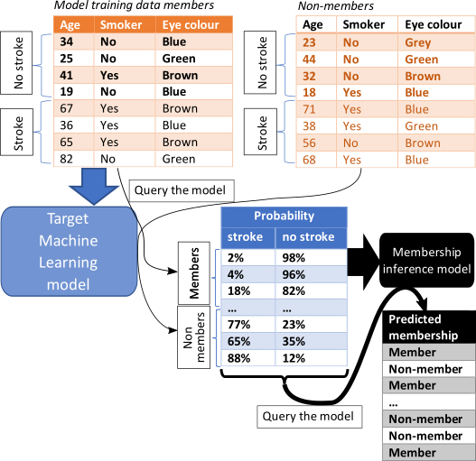

Worst Case Attack#
A membership inference attack (MIA) estimates the likelihood of specific data points were included to train the ML model. If high, then the model is at risk of data breach. If low, it is unlikely.
The Worst-Case is a black-box MIA scenario, and it does not need any shadow model. It is described in Rezaei as the easiest possible for the attacker. To perform a MIA, a new binary set of data (member, non-member of target train data) was created containing the predicted probabilities of the training and test data by the target model. By default, a Random Forest Classifier is fitted with half of this new set, though any sklearn classifier can be configured as the attack model.
This scenario was not supposed to simulate a realistic attack (if the attacker has access to the data, they do not need to attack) but instead to assess whether there were potential vulnerabilities in the model that could potentially be leveraged by an attacker. This can give a good estimation of the maximum capability of an attacker to succeed.
{kind=link}
In some cases, the risk of data leakage could be overestimated, but it aims to ensure (as much as possible) that any ML model allowed out of a TRE or the host environment is safe. At the same time, it’s easy to implement (see figure below).
This attack is, however, evaluated using average-case “accuracy” metrics that fail to characterize
whether the attack can confidently identify any members of the training set. For instance, imagine
the dataset includes 2 people with a rare disease, which are all the cases in a given region. In
such case these two cases could be at higher risk of being identified even if the overall estimate
risk of disclosure is low. For a more comprehensive check, the LIRAAttack
is recommended. While more statistically rigorous, it comes at a much greater computational cost
than the WorstCaseAttack since it requires training multiple shadow models.
Run a worst case attack based upon predictive probabilities.
- class sacroml.attacks.worst_case_attack.WorstCaseAttack(output_dir: str = 'outputs', write_report: bool = True, n_reps: int = 10, reproduce_split: int | Iterable[int] | None = 5, p_thresh: float = 0.05, n_dummy_reps: int = 1, train_beta: int = 1, test_beta: int = 1, test_prop: float = 0.2, include_model_correct_feature: bool = False, sort_probs: bool = True, attack_model: str = 'sklearn.ensemble.RandomForestClassifier', attack_model_params: dict | None = None)[source]#
Worst case attack.
Methods
attack(target)Check whether an attack can be performed and run the attack.
attack_from_preds(proba_train, proba_test[, ...])Run attack based upon the predictions in proba_train and proba_test.
attackable(target)Return whether a target can be assessed with WorstCaseAttack.
generate_arrays(n_rows_in, n_rows_out[, ...])Generate train and test prediction arrays, used when computing baseline.
Get parameters for this attack.
run_attack_reps(proba_train, proba_test[, ...])Run actual attack reps from train and test predictions.
- classmethod attackable(target: Target) bool[source]#
Return whether a target can be assessed with WorstCaseAttack.
- __init__(output_dir: str = 'outputs', write_report: bool = True, n_reps: int = 10, reproduce_split: int | Iterable[int] | None = 5, p_thresh: float = 0.05, n_dummy_reps: int = 1, train_beta: int = 1, test_beta: int = 1, test_prop: float = 0.2, include_model_correct_feature: bool = False, sort_probs: bool = True, attack_model: str = 'sklearn.ensemble.RandomForestClassifier', attack_model_params: dict | None = None) None[source]#
Construct an object to execute a worst case attack.
- Parameters:
- output_dirstr
Name of the directory where outputs are stored.
- write_reportbool
Whether to generate a JSON and PDF report.
- n_repsint
Number of attacks to run – in each iteration an attack model is trained on a different subset of the data.
- reproduce_splitint or Iterable[int] or None
Variable that controls the reproducibility of the data split. It can be an integer or a list of integers of length n_reps. Default : 5.
- p_threshfloat
Threshold to determine significance of things. For instance auc_p_value and pdif_vals.
- n_dummy_repsint
Number of baseline (dummy) experiments to do.
- train_betaint
Value of b for beta distribution used to sample the in-sample (training) probabilities.
- test_betaint
Value of b for beta distribution used to sample the out-of-sample (test) probabilities.
- test_propfloat
Proportion of data to use as a test set for the attack model.
- include_model_correct_featurebool
Inclusion of additional feature to hold whether or not the target model made a correct prediction for each example.
- sort_probsbool
Whether to sort combined preds (from training and test) to have highest probabilities in the first column.
- attack_modelstr
Class name of the attack model.
- attack_model_paramsdict or None
Dictionary of hyperparameters for the attack_model such as min_sample_split, min_samples_leaf, etc.
- attack_from_preds(proba_train: ndarray, proba_test: ndarray, train_correct: ndarray | None = None, test_correct: ndarray | None = None) None[source]#
Run attack based upon the predictions in proba_train and proba_test.
- Parameters:
- proba_trainnp.ndarray
Array of train predictions. One row per example, one column per class.
- proba_testnp.ndarray
Array of test predictions. One row per example, one column per class.
- generate_arrays(n_rows_in: int, n_rows_out: int, train_beta: float = 2, test_beta: float = 2) tuple[ndarray, ndarray][source]#
Generate train and test prediction arrays, used when computing baseline.
- Parameters:
- n_rows_inint
Number of rows of in-sample (training) probabilities.
- n_rows_outint
Number of rows of out-of-sample (testing) probabilities.
- train_betafloat
Beta value for generating train probabilities.
- test_betafloat:
Beta value for generating test probabilities.
- Returns:
- proba_trainnp.ndarray
Array of train predictions (n_rows x 2 columns).
- proba_testnp.ndarray
Array of test predictions (n_rows x 2 columns).
- get_params() dict#
Get parameters for this attack.
- Returns:
- paramsdict
Parameter names mapped to their values.
- run_attack_reps(proba_train: ndarray, proba_test: ndarray, train_correct: ndarray = None, test_correct: ndarray = None) dict[source]#
Run actual attack reps from train and test predictions.
- Parameters:
- proba_trainnp.ndarray
Predictions from the model on training (in-sample) data.
- proba_testnp.ndarray
Predictions from the model on testing (out-of-sample) data.
- Returns:
- dict
Dictionary of mia_metrics (a list of metric across repetitions).